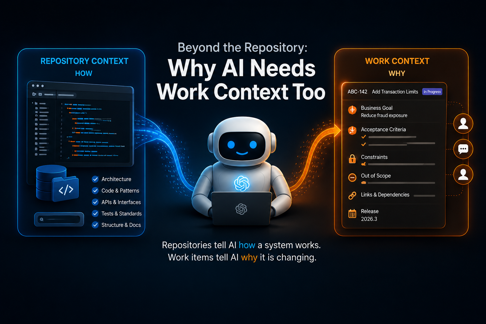
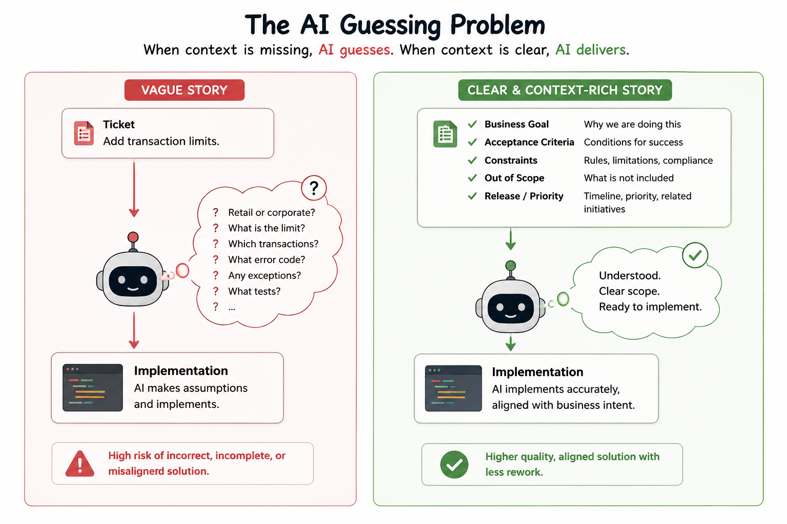
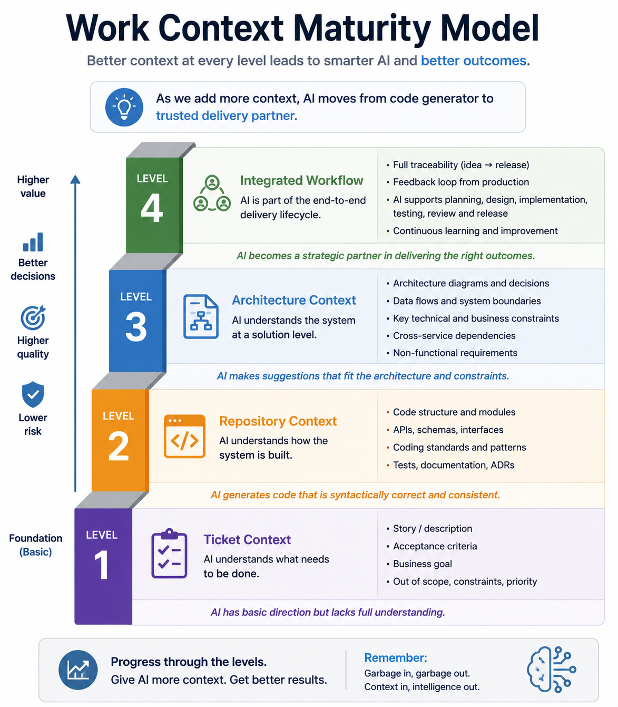
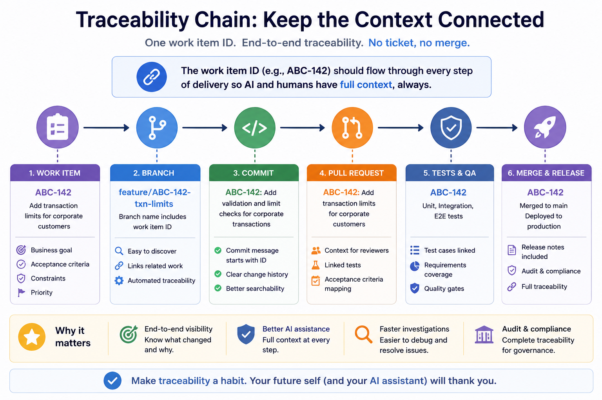
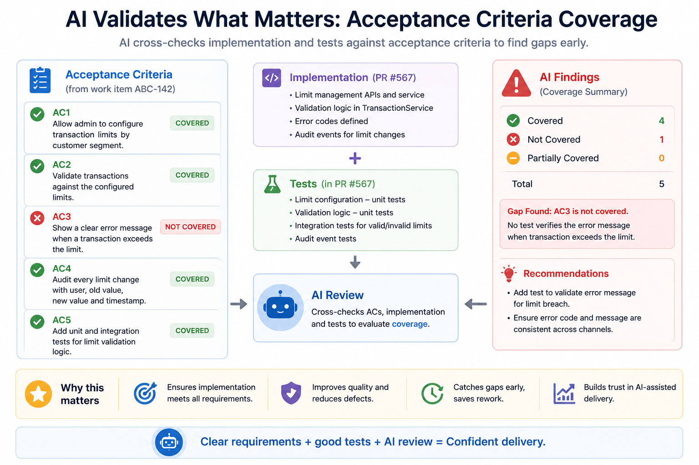
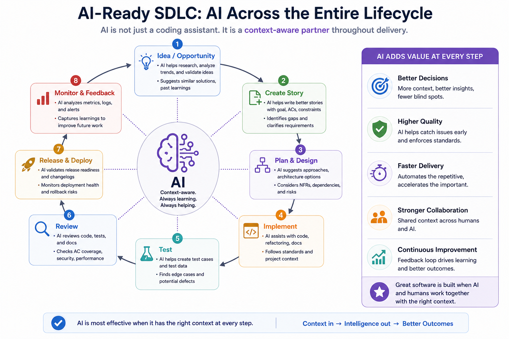

This article is part of the AI-Assisted Software Engineering series. Use the series guide to follow the complete reading path.
In my previous article, I argued that repositories should be structured not only for human developers, but also for AI assistants.
Architecture documentation, repository maps, coding standards, ADRs, README files, and AGENTS.md documents all help AI understand how a system is built.
That repository context matters.
A lot.
But after spending months using coding assistants on real software projects, I have noticed another pattern.
Sometimes the AI understands the repository perfectly.
It finds the right services. It follows existing patterns. It writes clean code. It generates reasonable tests.
And yet the solution is still wrong.
Not because the AI misunderstood the code.
Because it misunderstood the change.
The repository tells the AI how the system is built.
But software changes are not driven by code. They are driven by business needs, customer problems, compliance requirements, operational concerns, and product decisions.
The AI also needs to know why the system is being changed.
That second layer is what I call work context.
If repository context explains how a system works, work context explains why the system must change.
Together, they form the two primary context layers required for effective AI-assisted development.
A Failure I See Repeatedly
Imagine a team working on a banking platform.
A developer asks a coding assistant:
Implement transaction limits for customers.
The AI explores the repository. It discovers the transaction service. It finds validation patterns. It identifies where customer profiles are stored. It updates APIs. It writes tests.
Everything looks good.
The pull request passes. The code review looks clean.
But a few days later, the solution is rejected.
Why?
Because the actual requirement was:
Introduce transaction limits only for retail customers.
Corporate customers were intentionally excluded.
The AI had no way of knowing that. The repository never contained that information.
The implementation was technically correct.
The business outcome was wrong.
The missing piece was not repository context. The missing piece was work context.

Repository Context Is Only Half the Picture
Suppose you ask an AI assistant:
Implement customer transaction limits.
The repository can tell the AI:
- where the transaction service lives
- how APIs are structured
- which database tables exist
- testing conventions
- security frameworks
- deployment patterns
But it cannot answer:
- Why are limits being introduced?
- Which customers are affected?
- Is this regulatory?
- Is this country-specific?
- What must remain unchanged?
- What is explicitly out of scope?
- Which tests define success?
Those answers usually exist somewhere else.
Most often inside JIRA, Azure DevOps, Rally, GitHub Issues, Linear, ServiceNow, or another ALM and work-tracking system.
Historically, developers carried much of this context in their heads.
AI assistants cannot.
If context is not explicitly available, AI fills the gaps with assumptions.
And assumptions eventually become code.
What a Ticket Really Contains
Many teams think of a ticket as a tracking mechanism.
In reality, a good work item is a structured container of business intent.
Consider this example.
Story: Add transaction limits for retail customers
Business Goal:
Reduce fraud exposure on high-value transactions.
Acceptance Criteria:
- Retail customers cannot transfer more than $10,000/day.
- Corporate customers are unaffected.
- Existing scheduled transfers continue working.
- Limit breaches return error code TXN-403.
Out of Scope:
- Branch transactions
- ATM transactions
Release:
2026-Q3 Fraud Reduction InitiativeNotice how little of this information exists in the repository itself.
Yet almost every line influences implementation decisions.
The business goal explains intent. Acceptance criteria define success. Constraints protect important qualities. Out-of-scope items prevent accidental expansion. Comments and decisions often explain why one approach was chosen over another.
A hotfix, a regulatory deadline, and a six-month enhancement all carry different risk profiles.
The ticket is not only a task.
It is task context.
Why Vague Stories Produce Vague AI Output
Consider two stories.
Story A:
Add transaction limits.That is not a requirement.
It is effectively a prompt.
The AI now has to guess limit values, affected customer types, error handling, edge cases, and testing strategy.
Every guess introduces risk.
Story B:
Business Goal:
Reduce fraud exposure.
Acceptance Criteria:
- Retail customers limited to $10,000/day.
- Corporate customers unaffected.
- Existing transfers continue functioning.
- Error TXN-403 returned on breach.
Out of Scope:
- ATM channels
- Branch channelsNow the AI is implementing instead of guessing.
That distinction matters.
Historically, weak stories were often rescued by conversation. A developer would ask questions. A tech lead would clarify assumptions. A product owner would provide missing information.
AI changes that dynamic.
AI assistants consume whatever context is available. If the story is vague, the AI fills the gaps itself.
This means story quality is no longer just a product management concern.
It becomes an engineering concern.
Poor requirements no longer create occasional misunderstandings. They create incorrect implementations at machine speed.

How I Actually Give Work Context to AI
At this point, a practical question naturally appears.
How does the AI actually receive this context?
The answer is simpler than many people expect.
Level 1: Copy the Story Into the Prompt
The easiest approach is also surprisingly effective.
Implement story ABC-142.
Business Goal:
Reduce fraud exposure.
Acceptance Criteria:
...
Constraints:
...
Out of Scope:
...Most teams can start here today.
No tools required.
Level 2: Story Plus Repository Context
Now combine work context with repository context.
Implement story ABC-142.
Acceptance Criteria:
...
Relevant Components:
- TransferService
- CustomerProfileService
- TransactionValidatorNow the AI understands both why the change is needed and where the change belongs.
The quality of output usually improves significantly.
Level 3: Story Plus Architecture Context
Provide additional implementation guidance.
Story:
ABC-142
Acceptance Criteria:
...
Architecture Constraints:
- Reuse CustomerProfileService
- No new database tables
- Follow existing validation frameworkAt this point, the AI is operating with much richer context.
Level 4: Integrated Workflows
More advanced teams automate this process.
JIRA Story
|
v
AI retrieves story details
|
v
AI retrieves architecture documentation
|
v
AI retrieves repository map
|
v
AI proposes implementation approach
|
v
AI writes code
|
v
AI validates against acceptance criteriaThe mechanism may vary.
The principle remains the same.
The AI should have access to the same context a developer would use before starting implementation.
My Preferred Workflow
One practice has consistently improved results for me.
I rarely ask the AI to start coding immediately.
Instead, I first ask it to explain the work item back to me.
Story:
ABC-142
Acceptance Criteria:
...
Repository Context:
...
Before writing code:
1. Summarize the requirement.
2. Identify impacted components.
3. Identify constraints.
4. Identify risks.
5. Propose implementation approach.
6. Propose test scenarios.This often exposes misunderstandings before any code is generated.
I would rather discover a misunderstanding during planning than during code review.
Making Work Items AI-Ready
One of the simplest improvements teams can make is adopting a consistent structure.
A useful template might look like this:
- Business goal
- Problem statement
- Acceptance criteria
- Technical constraints
- Out of scope
- Dependencies
- Testing requirements
- Release target
Interestingly, the same structure that helps AI usually helps humans too.
That is rarely a coincidence.

Connecting Work Items to Code
Work context becomes dramatically more valuable when it remains visible throughout the delivery process.
The goal is simple:
Every code change should be traceable back to a work item.
That traceability starts with small habits.
Branch names:
feature/ABC-142-transaction-limits
bugfix/ABC-291-invalid-currency-validation
hotfix/ABC-401-login-timeoutCommit messages:
ABC-142 Add transaction limit validation
ABC-142 Add integration tests for daily limit checks
ABC-142 Refactor transfer validation workflowPull request titles:
ABC-142 Implement retail transaction limitsPull request bodies:
Story:
ABC-142
Business Goal:
Reduce fraud exposure.
Acceptance Criteria Covered:
[x] Retail limit enforcement
[x] Corporate customers unaffected
[x] TXN-403 returned
[x] Integration tests added
Out of Scope:
[x] ATM transactions
[x] Branch transactions
Risks:
Potential impact to transfer validation service.Now the relationship between requirements and implementation becomes explicit.
That helps humans review the work.
It also helps AI reason about whether the work actually satisfies the requirement.
AI-Assisted Pull Request Reviews
One of the most useful review questions is not:
Is the code good?
It is:
Does the implementation satisfy the acceptance criteria?
For example:
Acceptance Criteria:
AC1
AC2
AC3
Tests:
T1
T2
AI Finding:
AC3 has no corresponding test coverage.This kind of review frequently finds issues that traditional code review can miss.
A reviewer may see clean code. An AI review that has the ticket, implementation, and tests together may see missing coverage against the actual requirement.

Governance and Gates
As AI accelerates development, governance becomes more important, not less.
One principle I increasingly favor is:
No ticket, no merge.
Not because process matters for its own sake.
Because traceability matters.
Every implementation should be linked to a business need. Every decision should be explainable later.
Example merge rules might include:
- PR must reference a valid work item.
- PR title must include the work item ID.
- At least one acceptance criterion must have corresponding test coverage.
- CI checks must pass.
- Human reviewer approval is required.
- AI review gate must pass.
These rules are not bureaucracy.
They are context preservation mechanisms.
Human Accountability Does Not Go Away
AI can generate code.
AI can generate tests.
AI can review pull requests.
AI can validate requirements.
But AI does not own outcomes.
Humans remain accountable for:
- business correctness
- regulatory compliance
- security decisions
- production risk
- architectural trade-offs
- release decisions
The more AI participates in software delivery, the more important human accountability becomes.
Not less.

Building an AI-Ready SDLC
Many discussions about AI-assisted development focus on prompts.
Others focus on models.
Some focus on IDE integrations.
Those things matter.
But they are not the foundation.
The foundation is context.
In the previous article, we explored repository context: architecture, documentation, standards, repository maps, and AI agent instructions.
Those artifacts tell AI how the system works.
This article adds the second half: stories, acceptance criteria, constraints, decisions, traceability, and governance.
These artifacts tell AI why the system is changing.
For years we optimized repositories for human developers.
Now we must optimize them for humans and AI.
The same is becoming true for our work management systems.
Stories, acceptance criteria, decisions, constraints, and traceability are no longer just project management artifacts.
They are becoming part of the development context itself.
AI-ready development is not just about better prompts.
It is about making the entire software delivery lifecycle context-rich.
And that context must flow all the way from idea to production.